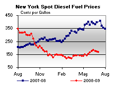
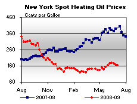

Released on July 8, 2009
(Next Release on July 15, 2009)
Breaking the Wall
Publius Aelius Hadrianus, or Hadrian, was the emperor of Rome from AD 117 to AD 138. Under Hadrian’s direction the Roman Empire began construction of a stone fortification that would eventually extend some 80 miles across northern Britain. Known later as Hadrian’s Wall, the structure served as the border of the Roman Empire and a primary line of defense against the Scottish tribes of the north for nearly 300 years.
As Hadrian’s Wall in the time of ancient Rome, oil prices have long served as a defining marker for the price of natural gas in the United States. Substitutability between oil and natural gas in the industrial and electric power sectors meant that natural gas prices were bound, to a certain extent, on the high side by the prices of distillate fuel, typically priced at a premium to crude, and on the low side by residual fuel, typically priced at a significant discount to crude. In this environment, changes in the price of crude oil, reflected in both distillate fuel and residual fuel oil prices, were generally accompanied by a parallel movement in natural gas prices. From 2000 through 2005, the ratio of the crude oil price in dollars per barrel (bbl) to the U.S. natural gas price in dollars per million Btu (MMBtu) averaged about 7:1. Of course, both historically and in today’s market, deliverability and storage constraints generated intermittent episodes of extreme movement in the ratio of oil prices to natural gas prices (see chart below).
Starting in 2006, however, the relationship between oil and natural gas prices began to change. At that time, the price for crude oil began to increase, pushing residual fuel oil prices higher, but the price of U.S. natural gas didn’t rise with it. If end users had the capability to switch from residual fuel oil to natural gas, they did it then. For example, switching was documented in electric generation in the Northeast and in Florida. But instead of prices moving back into alignment as natural gas consumption expanded, with the exception of a brief period in late-2006, the spread persisted. As natural gas supply increased from 2006 through the first half of 2009, lower natural gas prices meant that oil-to-gas fuel-switching opportunities were fully utilized. With natural gas supply continuing to grow, the crude oil to natural gas price ratio jumped to an average of nearly 11:1. In June 2009, the ratio was a whopping 18:1, the highest it has been since October 1990. Indeed, with natural gas prices currently in the $3 to $4 per MMBtu range, efficient natural gas generation can now compete effectively for economic dispatch against coal-fired generation in parts of the Southeast even though natural gas generally remains somewhat more expensive than coal on a Btu basis. The shift in focus from fuel-switching on the margin between natural gas and oil to fuel-switching on the margin between natural gas and coal illustrates a major market shift.
It is increasingly apparent that the markets for crude oil and U.S. natural gas are now responding to different drivers. Whereas the market for crude oil is unquestionably global in nature, the natural gas market remains highly segmented. Asian demand and OPEC supply may be key factors influencing the current crude oil market, but they have little bearing on the natural gas market in the United States. Instead, in recent years, U.S. natural gas prices have been more responsive to conditions in North America: hurricane activity along the Gulf Coast, working inventory levels, development of natural gas shale, temperature swings that boost demand for space-heating in the winter and space-cooling in the summer, and, during the present economic downturn, a sharp decline in industrial gas demand.
After reaching extremely high levels in mid-2008, prices for both crude oil and natural gas fell sharply amid the broad economic downturn. However, while natural gas prices have remained near recent lows, the spot price of crude oil has more than doubled since touching $30 per barrel on December 23, 2008. The crude oil to natural gas price ratio is expected to decline in 2010, but not to pre-2006 levels. Despite the expectation of rising natural gas prices relative to crude oil, the price ratio between the fuels seems to be holding at roughly 12:1 through 2010.
Today’s residents of Carlisle, England, would probably agree that the significance of Hadrian’s Wall has changed since about the third century. Aside from the 1999 Rugby World Cup, the British no longer worry about an invasion by the Scots. Although it would be going too far to claim that the crude oil market no longer affects the natural gas market, it is appropriate to acknowledge that the pricing relationship, and its significance, has changed.
U.S. Average Gasoline Price Drops 3 Cents
Falling for the second consecutive week, the U.S. average price for regular gasoline dropped three cents to $2.61 per gallon – $1.50 below the all-time high price set a year ago on July 7, 2008. Prices decreased throughout the country, with the largest drop occurring on the Gulf Coast. The price dipped three cents both on the East Coast and in the Midwest to $2.61 and $2.55 per gallon, respectively. The average price on the Gulf Coast remained the lowest of any region, dropping six cents to $2.46 per gallon. In the Rocky Mountains, the price slipped a penny to $2.59 per gallon. The price on the West Coast dropped two cents to $2.89 per gallon. In California, the average slipped three cents to $2.95 per gallon.
The U.S. average price for diesel fuel decreased about a penny for the second week in a row, settling at $2.59 per gallon. That price was $2.13 below a year ago. Prices dipped slightly in all major areas of the country with the exception of the Rocky Mountain region. On the East Coast, the average dropped two cents to $2.61, while the price in the Midwest slipped a penny to $2.57 per gallon. The average price on the Gulf Coast dipped two cents to $2.55, as the average in the Rocky Mountains rose two cents to $2.65 per gallon. On the West Coast, the price was $2.71 per gallon, a drop of about a penny. In California, the price was essentially unchanged at $2.79 per gallon.
Highest June Propane Build Since 2003
June’s nearly 9.4-million-barrel stockbuild contributed to propel primary inventories of propane to its highest level for this month in 27 years, reaching an estimated 62.1 million barrels as of July 3, 2009. Despite the robust growth during June, the final week saw inventories grow at a much slower pace, compared to the last few weeks, with stocks gaining a relatively modest 1.3 million barrels. The Gulf Coast led all regions with a 1.1-million-barrel build last week, followed by the Midwest that showed inventories up by 0.2 million barrels. The combined Rocky Mountain/West Coast region reported inventories higher by 0.1 million barrels last week while inventories in the East Coast edged lower by less than 0.1 million barrels during this same time. Propylene non-fuel use inventories inched higher by less than 0.1 million barrels last week but maintained the same prior week’s share of 3.1 percent share of total propane/propane inventories.
Text from the previous editions of “This Week In Petroleum” is now accessible through a link at the top right-hand corner of this page.
| Retail Prices (Cents Per Gallon) | |||||||
| Retail Data | Changes From | Retail Data | Changes From | ||||
| 07/06/09 | Week | Year | 07/06/09 | Week | Year | ||
| Gasoline | 261.2 | Diesel Fuel | 259.4 | ||||
| Spot Prices (Cents Per Gallon*) | |||||||||||||||||||||||||||||||||||
|  | |||||||||||||||||||||||||||||||||||
|  | |||||||||||||||||||||||||||||||||||
|
|||||||||||||||||||||||||||||||||||
| *Note: Crude Oil WTI Price in Dollars per Barrel.
Markets were closed on 7/3/2009. |
|||||||||||||||||||||||||||||||||||
| Stocks (Million Barrels) | |||||||
| Stocks Data | Changes From | Stocks Data | Changes From | ||||
| 07/03/09 | Week | Year | 07/03/09 | Week | Year | ||
| Crude Oil | 347.3 | Distillate | 158.7 | ||||
| Gasoline | 213.1 | Propane | 62.096 | ||||